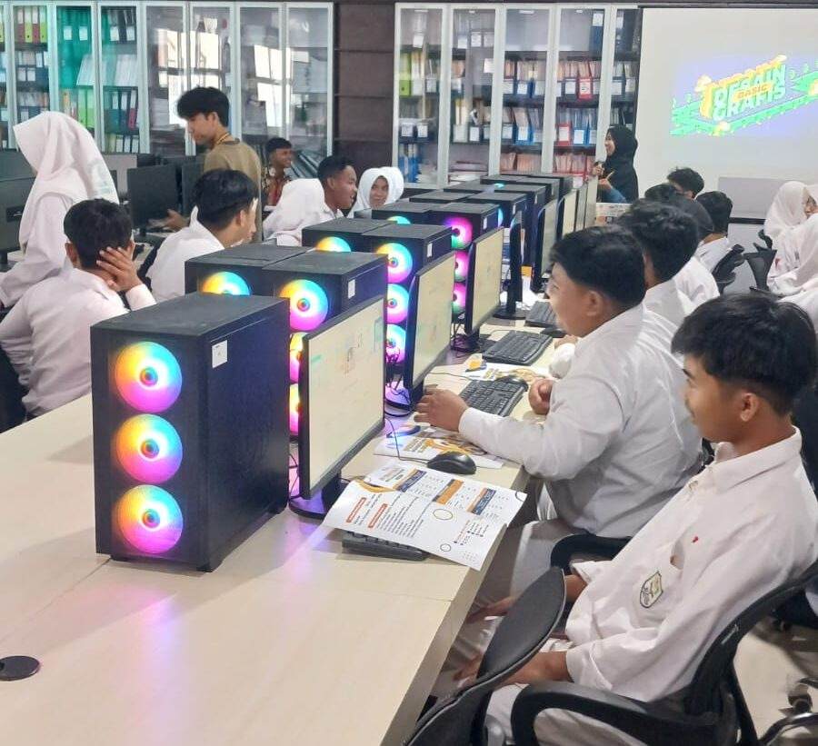
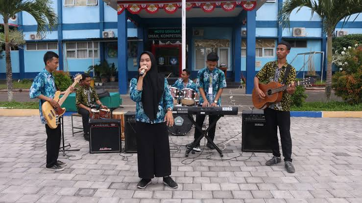
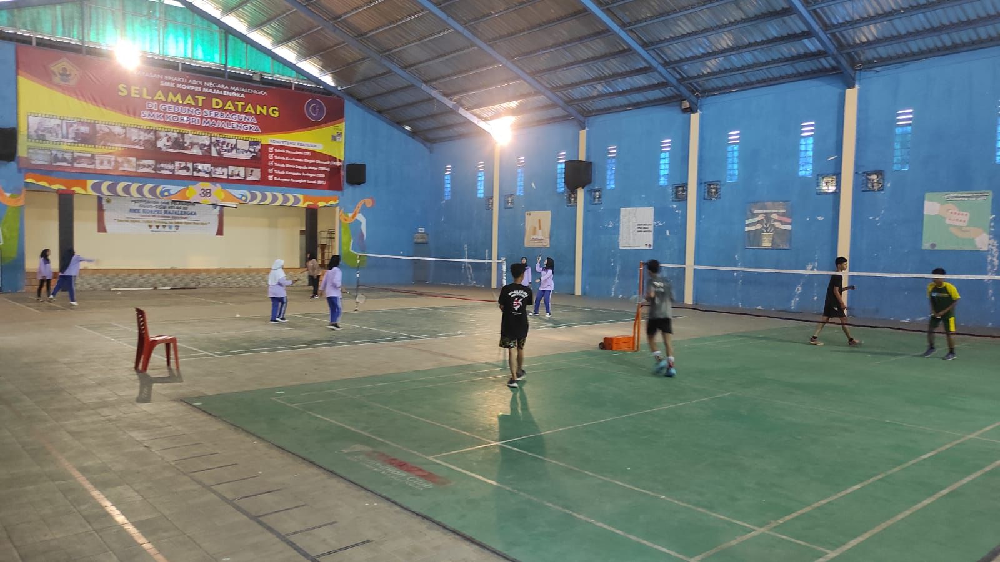

Pilihan Ekstrakurikuler
Pilih kegiatan sesuai minat dan bakatmu

⚽ Futsal
Mengembangkan kemampuan olahraga, kedisiplinan, dan kerja sama tim.

🥋 Pencak Silat
Melatih kedisiplinan, keberanian, dan kemampuan bela diri siswa.

💻 IT Club
Meningkatkan kemampuan siswa dalam teknologi, komputer, dan pemrograman.

🎨 Seni & Desain
Mengembangkan kreativitas siswa melalui seni, desain, dan berbagai karya kreatif.

🎸 Musik
Menyalurkan bakat siswa dalam bidang musik dan meningkatkan kreativitas.

🏸 Badminton
Meningkatkan kebugaran, keterampilan olahraga, serta sportivitas siswa.